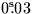
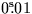

Component of Earth orbit velocity and heliocentric
light time in a given direction.
CALL:
CALL sla_ECOR (RM, DM, IY, ID, FD, RV, TL)
GIVEN:
RM,DM
R
mean of date (radians)
IY
I
year
ID
I
day in year (1 = Jan 1st)
FD
R
fraction of day
RETURNED:
RV
R
component of Earth orbital velocity (km s-1)
TL
R
component of heliocentric light time (s)
NOTES:
1.
The date and time is TDB (loosely ET) in a Julian calendar
which has been aligned to the ordinary Gregorian
calendar for the interval 1900 March 1 to 2100 February 28.
The year and day can be obtained by calling sla_CALYD or
sla_CLYD.
2.
Sign convention:
The velocity component is +ve when the
Earth is receding from
the given point on the sky.
The light time component is +ve
when the Earth lies between the Sun and
the given point on the sky.
3.
Accuracy:
The velocity component is usually within 0.004 km s-1
of the correct value and is never in error by more than
0.007 km s-1.
The error in light time correction is about
 at worst,
but is usually better than .
For applications requiring higher accuracy, see the sla_EVP routine.